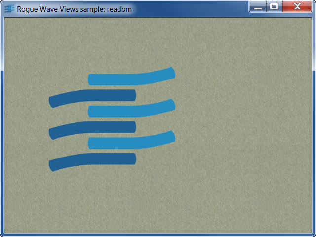
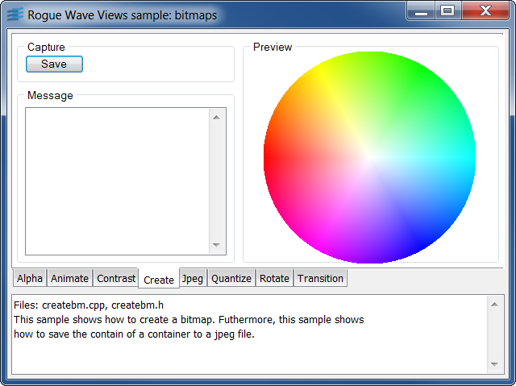
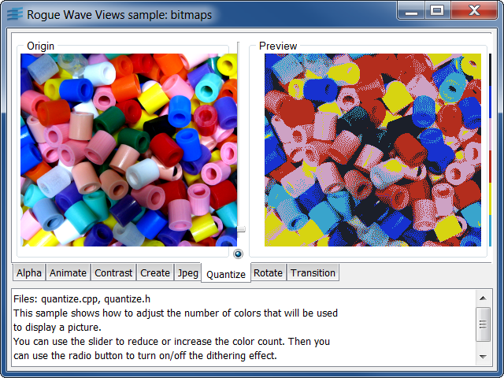
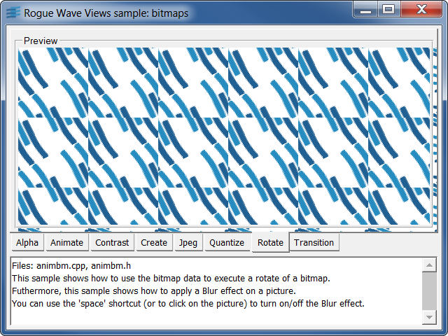
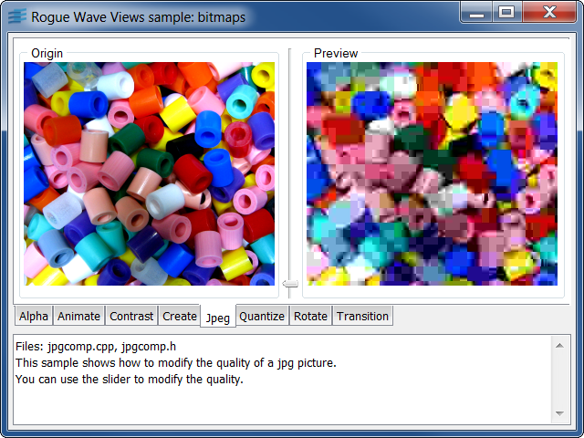
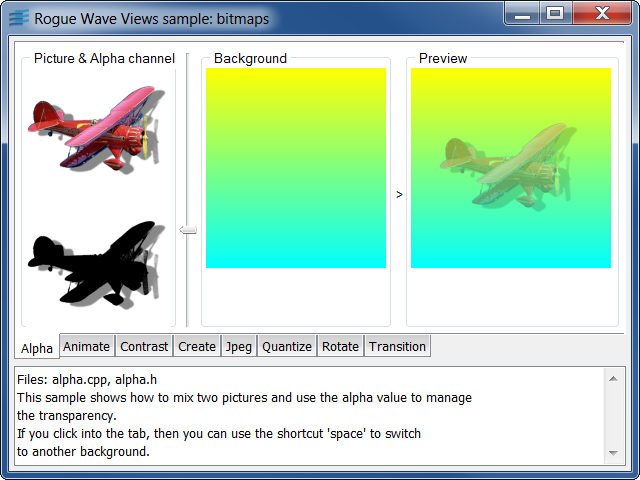
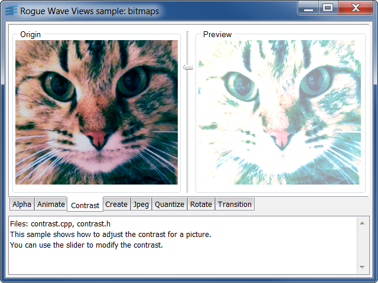

readbmLoads and displays supported bitmap images.
This example shows you how to use IlvDisplay::readBitmap to load images.
Filenames are given as command line arguments.
Supported image types are:
IlvDisplayIlvBitmapIlvBitmapStreamercreatebmShows you how to use bitmap data.
This example shows you how to use bitmap data. Two bitmap data are created:
IlvBWBitmapData.IlvDisplayIlvRGBBitmapDataIlvBWBitmapDataIlvBitmapquantizeShows you how to use the color quantizer.
This sample uses the Rogue Wave Views color quantizer to create an
indexed image from a true color image.
An image filename can be given as an argument to the executable.
The indexed image can have up to 256 colors.
Dithering can be switched on or off.
For best results, it is recommended to use a TrueColor display
to run this sample.
When operating on an indexed system, Rogue Wave Views quantizes by default
true color images to 64 colors. This allows for multiple TrueColor
images to be displayed while retaining accurate visual aspect for
each image.
For demonstration purposes, this sample code uses portable GUI
elements from the Gadgets package of the Rogue Wave Views suite.
Feel free to use these elements in your application if you have
a license for Rogue Wave Views or for Rogue Wave Views Controls.
This information applies to the classes located in the library ilvgadgt,
listed in the README file that you can find in the installation directory.
IlvDisplayIlvBitmapDataIlvWUQuantizerIlvPNGStreamerIlvBitmapanimbmShows you how to use bitmap data operators.
This sample uses the Rogue Wave Views bitmap data to create a rotating
view of an image.
An idle procedure updates a bitmap data as fast as possible.
A tile image is loaded and then the foreground bitmap data
is generated as a combination of zoom/scale of the tile image.
An additional blur effect can be switched on/off using the 'space'
key. This effect uses a background bitmap data. The foreground
bitmap data is blended with the background (the blend
factor is 150/255), then the background is copied in the foreground
data.
Initializing the background with a red color gives a disappearing
red flash.
IlvDisplayIlvBitmapDataIlvBitmapjpgcompShows you how to use the JPEG streamer.
This sample uses the Rogue Wave Views JPEG streamer to preview the effect
of JPEG compression on an image.
An image is loaded into a bitmap data, a JPEG image is created
from this image and then displayed.
An image filename can be given as an argument to the executable.
A slider allows you to change the quality setting for the JPEG streamer.
For demonstration purposes, this sample code uses portable GUI
elements from the Gadgets package of the Rogue Wave Views suite.
Feel free to use these elements in your application if you have
a license for Rogue Wave Views or for Rogue Wave Views Controls.
This information applies to the classes located in the library ilvgadgt,
listed in the README file that you can find in the installation directory.
IlvDisplayIlvBitmapDataIlvJPGStreamerIlvBitmapanimateShows you how to use the IlvBitmapAnimationHandler class.
This sample uses the IlvBitmapAnimationHandler class to display an animated bitmap. It loads several bitmaps and add them to the animation handler. Then, the animated bitmap is displayed using an IlvTransparentIcon object.
Here are the images loaded by this sample:
IlvDisplayIlvBitmapIlvBitmapAnimationHandlerIlvTransparentIconIlvContaineralphaShows you how to use alpha blending.
This sample uses the alpha channel in IlvRGBBitmapData
to demonstrate alpha compositing.
A PNG image with alpha channel is loaded, then alpha composited
with a destination image. The destination image can be changed using
the 'space' key.
An additional blend value can be selected using a slider.
For demonstration purposes, this sample code uses portable GUI
elements from the Gadgets package of the Rogue Wave Views suite.
Feel free to use these elements in your application if you have
a license for Rogue Wave Views or for Rogue Wave Views Controls.
This information applies to the classes located in the library ilvgadgt,
listed in the README file that you can find in the installation directory.
IlvDisplayIlvBitmapDataIlvBitmaptransitionShows you how to use the IlvBitmapTransitionHandler class.
This sample uses subclasses of the
IlvBitmapTransitionHandler class to perform transitions
between two images. To activate a transition, click on the image. To
change the type of the transition, use the combo box. It is also
possible to modify the speed of the transition.
IlvBitmapTransitionIlvBitmapTransitionHandlerIlvSliderIlvComboBoxcontrastShows you how to use the IlvIndexedBitmapData class.
This sample uses the IlvIndexedBitmapData and associated IlvColorMap classes to interactively change the contrast of an image. An image filename can be given as an argument to the executable. If the image is a true color image, it is automatically converted to an indexed one.
For demonstration purposes, this sample code uses portable GUI
elements from the Gadgets package of the Rogue Wave Views suite.
Feel free to use these elements in your application if you have
a license for Rogue Wave Views or for Rogue Wave Views Controls.
This information applies to the classes located in the library ilvgadgt,
listed in the README file that you can find in the installation directory.
IlvDisplayIlvIndexedBitmapDataIlvColorMapIlvWUQuantizerIlvBitmap